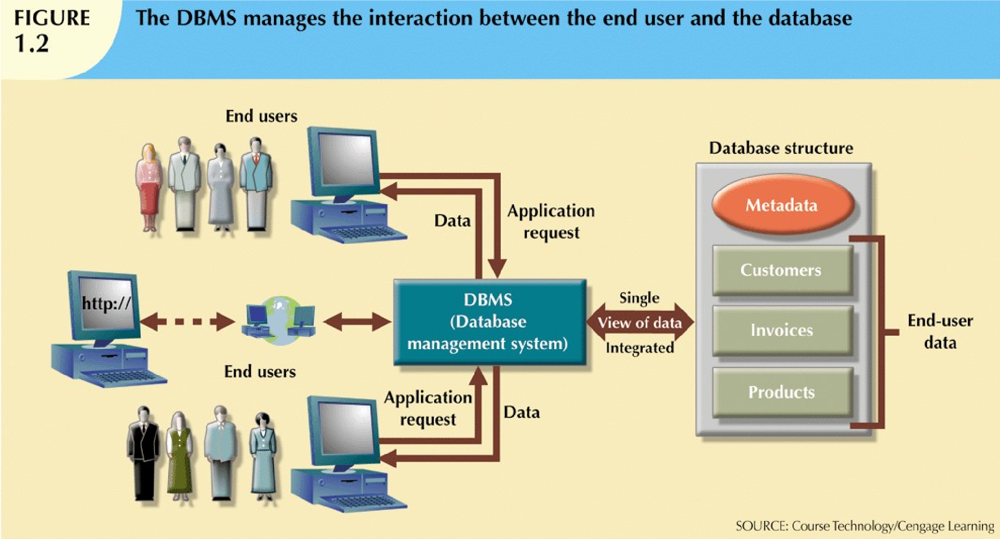
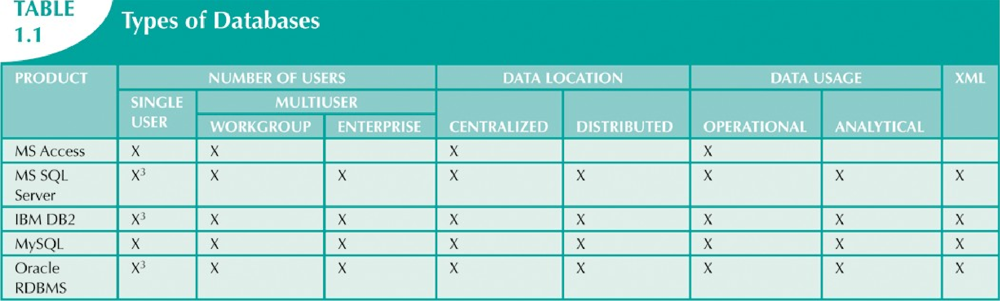
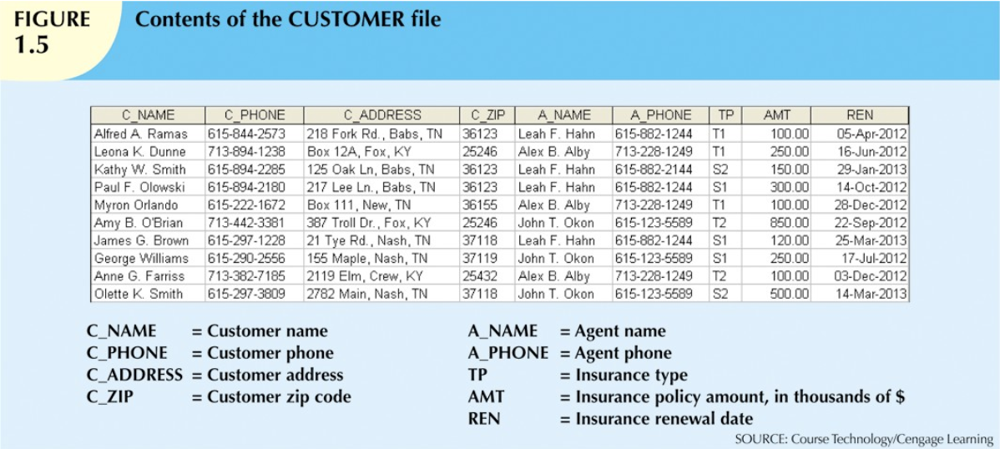
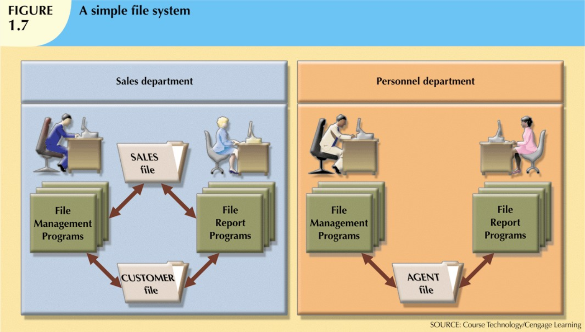
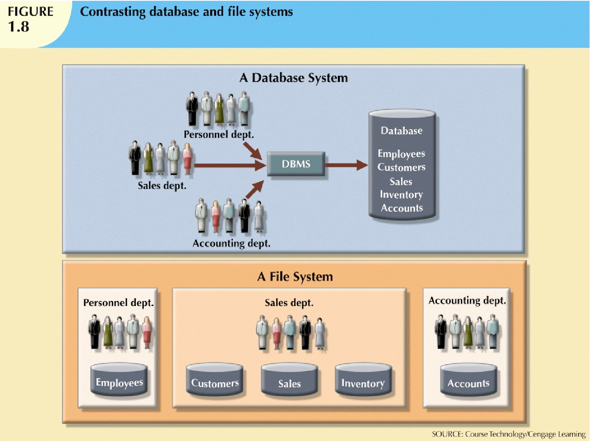

- Good decisions require good information derived from raw facts.
- Data is managed most efficiently when stored in a database.
- Databases evolved from computer file systems.
Why Databases?
- Business
- Helps figure out who customers are, what products are being sold, who is employed, who owes money vice versa.
- Storing immense collections of data (AT&T: trillions of phone calls, 70k calls/sec; Google: 91 million searches/day)
- Research
- Administration
DATA: raw facts, or facts that have not yet been processed to reveal their meaning to the end user.
Data vs. Information
Data; the building blocks of information. Information; the result of processing data to reveal meaning; requires context.
Data -> Infomation -> Knowledge
INFORMATION: the result of processing raw data to reveal its meaning. Consists of transformed data and facilitates decison making.
KNOWLEDGE: the body of info and facts about a specific subject. Knowledge implies familiarity, awareness, and understanding of information as it applies to an environment. A key characteristic is that new knowledge can be derived from old knowledge.
- Data constitutes the building blocks of information.
- Information is produced by processed data.
- Information is used to reveal the meaning of data.
- Accurate, relevant, and timely information is the key to good decision making.
- Good decision making is the key to organizational survival in a global environment.
DATA MANAGEMENT: a process that focuses on data collection, storage, and retrieval. Common data management functions include additon, deletion, modification, and listing.
Introducing the Database
Databases store two things: end-user data and metadata.
DATABASE: a shared, integrated computer structure that houses a collection of related data. Contains two types of data: user data (raw facts) and metadata.
METADATA: data ABOUT data; data about data characteristics and relationships. i.e. name of data element, type of values (numeric, dates, text), and whether can be left empty.
DATABASE MANAGEMENT SYSTEM (DBMS): collection of programs that manages the database structure and controls access to the data stored in the database.
The DBMS as an Intermediary
END USER APPS –– DBMS –– DATABASE
End Users with their Apps can access the database only through DBMS, which integrates many users' views of the data.

Advantages of a DBMS
- Improved data sharing
- Improved data security
- Better data integration
- Minimized data inconsistency
- Improved data access
- Improved decison making
- Increased end-user productivity
End users have better access to more and better-managed data; quicker responses.
Provides a framework for better enforcement of data privacy and security policies.
Wider access promotes an integrated view of operations & clear view of big picture.
Greatly reduced in properly designed database.
Produce quick answers to ad hoc queries (spur-of-moment question). i.e. dollar volume of sales by product during the past six months.
Better managed & improved access = generate better-quality info = better decisions.
Availability w/ tools to transform data into meaningful info = empowered users & decisions.
DATA INCONSISTENCY: condition in which different versions of the same data yield different (inconsistent) results. i.e. repeat data.
QUERY: question or task asked by end user of database in form of SQL code. Specific request for data manipulation issued by the end user or the application to the DBMS.
QUERY RESULT SET: collection of data rows returned by a query.
DATA QUALITY: comprehensive approach to ensuring the accuracy, validity, and timeliness of data.
Types of Databases
By Users
Single user: supports only one user at a time i.e. a desktop database on a PC.
Multiuser: supports multiple users at the same time (workgroup and enterprise databases).
By Location
Centralized: data located at a single site.
Distributed: data spread across several different sites.
Cloud: created & maintained via cloud data services.
By Use
Operational: supports day-to-day transactions (also called transactional/production database).
Analytical: stores historical data for tactical/strategic decisions–data warehouses, OLAP, BI.
- DATA WAREHOUSE: stores data in a format optimized for decision support.
- ONLINE ANALYTICAL PROCESSING (OLAP): enable retrieving, processing, and modeling data from the data warehouse.
- BUSINESS INTELLIGENCE: captures and processes business data to generate information that support decision making.
By Structure
Unstructured: data in its original state.
Structured: data formatted for processing.
Semistructured: partially processed (i.e. XML)
Database Type Table

Why Database Design Matters
Well-Designed: facilitates data management and generates accurate, valuable information.
Poorly Designed: causes difficult-to-trace errors and bad decison making.
DATABASE DESIGN: the process that yields the description of the database structure and determines the database components. The second phase of the database cycle.
Why Study File Systems?
- Makes the complexity of database design easier to understand.
- Helps avoid similar problems when using a DBMS.
- Useful knowledge when converting a file system to a database.
Manual File Systems
Composed of file folders, each tagged and kept in a cabinet, organized by expected use.
Payroll, Inventory, Customers, Orders
Cumbersome for large data collections–served small data needs adequately.
Computerized File Systems
The Data Processing (DP) Specialist
- Converted computer file structures from the manual system.
- Wrote software to manage the data.
- Designed the application process.
Contents of the Customer File

Each File Had Its Own Program
As the number of files grew, each was owned by the department that created it.
Payroll Program -> Payroll File. Inventory Program -> Inventory File. Sales Program -> Sales File.
No sharing between programs–each silo duplicates related data independently.
Simple File System

Spreadsheets like MS Excel are often used as a "database substitute," even when a real database would serve the task far better.
File System Limitations
- Extensive Programming; due to data dependence & structural dependence.
- No Ad Hoc Queries
- Complex Administration
- Rigid Structures
- Weak Security
Structural & Data Dependence
Structural DEPENDENCE: access to a file depends on its own structure.
Structural INDEPENDENCE: structure can change without affecting data access.
Data DEPENDENCE: data access changes when storage characteristics change.
Data INDEPENDENCE: storage characteristics don't affect data access.
Logical vs. Physical Data Format
Logical Format: how a human views the data.
Physical Format: how the computer must work with the data.
Islands of Information
Organizational structure promotes storing the same data in different, disconnected locations.
- Sales Dept. Customer Copy
- Billing Dept. Customer Copy
- Support Dept. Customer Copy
Data redundancy -> Data in different locations is unlikely to be updated consistently -> Data anomalies
Data Anomalies
Abnormalities when changes to redundant data are not made correctly everywhere; lead to data inconsistencies and data integrity problems.
- Update Anomaly: a change is applied in one place but not another.
- Insertion Anomaly: new data cannot be added without unrelated data.
- Deletion Anomaly: removing data unintentionally removes other data.
when changing an agent's phone number
when creating a new agent
when an agent leaves the organization
DATA ANOMALIES: abnormalities when all changes in redundant data are not made correctly; data anomalies lead to data inconsistencies thereby creating data integrity problem.
Lack of Data-Modeling Skills
Most users lack the skill to properly design databases, despite many personal productivity tools being available.
Good data modeling facilitates communication between the designer, user, and developer.
Database Systems
Logically related data stored in a single logical data repository
- May be physically distributed among multiple storage facilities.
- A DBMS eliminates most of the file system's problems.
Contrasting Database & File System

Extensible Markup Language (XML) represents data elements in textual format. Supported by XML databases.